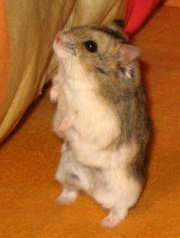
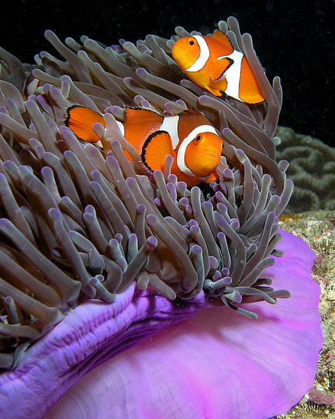

Hamster
El hámster dorado o sirio puede medir cerca de 15 cm, es originario de Siria. Su pelaje más habitual es de un tono marrón claro, aunque a veces son de pelaje amarillo claro, pero en las tiendas de animales puede recibir nombres muy diversos según su coloración. Existen algunas variedades de la especie con distintos rasgos, como un pelo más largo, que puede llegar a varios cm y suele requerir cuidados especiales. Los hámsteres dorados son muy territoriales, y suelen pelearse hasta la muerte si se mantienen en una misma jaula con otros miembros de su especie. Una vez llegados a la edad adulta les gusta jugar con la rueda.
Gato
El gato o gato doméstico1 (Felis silvestris catus) y coloquialmente llamado minino,micho, mizo o miz es una subespecie de mamífero carnívoro de la familia Felidae. El gato está en convivencia cercana al ser humano desde hace unos 9500 años,7 periodo superior al estimado anteriormente, que oscilaba entre 3500 y 8000 años.
Perro
El perro o perro doméstico (Canis lupus familiaris) o también llamado can, es un mamífero carnívoro de la familia de los cánidos, que constituye una subespecie del lobo (Canis lupus). Un estudio publicado por la revista Nature revela que, gracias al proceso de domesticación, el organismo del perro se ha adaptado5 a cierta clase de alimentos, en este caso el almidón.6 Su tamaño o talla, su forma y pelaje es muy diverso según la raza. Posee un oído y olfato muy desarrollados, siendo este último su principal órgano sensorial. En las razas pequeñas puede alcanzar una longevidad de cerca de 20 años, con atención esmerada por parte del propietario, de otra forma su vida en promedio es alrededor de los 15 años.Pez payaso
El pez payaso se caracteriza por sus contrastados e intensos colores, rojo, rosa, negro, amarillo, naranja o blanco. Procede de los arrecifes de coral del Indo-Pacífico, y vive conjuntamente con las anémonas, teóricamente especies depredadoras, de las que obtiene una protección frente a posibles atacantes. A cambio, los peces payaso ofrecen la posibilidad de acercar alimento a la boca de la anémona, y, con su continuo movimiento, limpian el disco oral y los tentáculos de la anémona, evitándole infecciones bacterianas. Al tiempo, los ejemplares adultos de pez payaso defienden a sus anémonas hospedantes de peces depredadores especializados, como los peces mariposa de la familia Chaetodontidae.